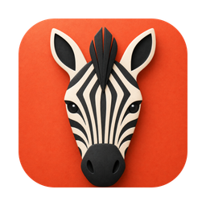

01
Le Markdown, tout simplement
Tapez du Markdown. Titres, listes, gras et code prennent forme aussitôt.

zebraNotes Markdown · Mac, iPhone et iPad
Tapez la syntaxe, voyez la mise en forme. Ajoutez diagrammes, formules, code et tableaux modifiables à mesure que vos idées grandissent — de la note rapide au texte digne d’être partagé.

Zebra sur Mac · notes fictives, vraies captures de l’app · images en anglais
Zebra en 14 secondes
Chaque écran de l’app dans ce film est une vraie capture de Zebra ; les textes animés ont été ajoutés pour le film. Ils sont en anglais.
D’une petite note à une vue d’ensemble
Commencez par une phrase, puis ajoutez les détails qui la rendent vôtre. Choisissez un appareil pour voir ce que Zebra y permet.
Mac · 10 fonctionnalités
Les captures en français pour cet appareil arrivent bientôt ; les captures en anglais sont affichées en attendant.
Tapez du Markdown. Titres, listes, gras et code prennent forme aussitôt.
Décrivez un processus en Mermaid. Modifiez le texte, le diagramme suit.
Placez vos formules LaTeX à côté du raisonnement qui leur donne du sens.
Gardez le code coloré à côté de vos explications, prêt pour la prochaine fois.
Rangez vos projets dans des dossiers, puis reliez vos idées par tags et liens.
Ouverture rapide (⌘O) réunit notes, tags et commandes. La recherche reste sur votre Mac.
PDF et Word deviennent des notes modifiables ; exportez en Markdown, PDF et plus.
Éditez simultanément sur vos appareils : le texte des notes ordinaires fusionne tout seul.
22 thèmes repensés. Ajustez les couleurs, importez ou exportez vos fichiers de thème.
Écrivez dans les cellules, ajoutez ou déplacez lignes et colonnes selon vos plans.
Écrans réels de l’app avec des notes d’exemple. Le zèbre est notre compagnon illustré. Le schéma de synchronisation explique le principe ; ce n’est pas l’enregistrement d’une synchronisation réelle.
Édition simultanée · Synchronisation iCloud privée
Ajoutez une tâche sur l’iPhone pendant que vous révisez un plan sur le Mac. Les modifications simultanées du texte des notes ordinaires fusionnent à la synchronisation, et vous avez moins de copies en conflit à départager.
Vos appareils · Même compte Apple · À votre choixActivez la synchronisation iCloud sur les appareils connectés au même compte Apple. Les modifications simultanées du texte des notes fusionnent automatiquement. Écrivez hors ligne, la synchronisation reprend à la reconnexion. La synchronisation est désactivée par défaut sur une nouvelle installation.
Les modifications simultanées d’une note chiffrée restent des versions distinctes. Déverrouillez, examinez et restaurez ce dont vous avez besoin ; les titres et certaines métadonnées externes restent visibles.
| Fonction | Mac | iPhone et iPad |
|---|---|---|
| Écrire et classer | Markdown, tableaux, diagrammes, formules, code, dossiers et tags imbriqués | Markdown, tableaux, diagrammes, formules, code, dossiers et tags imbriqués |
| Retrouver | Recherche sémantique locale (chinois et anglais) et par mots-clés, recherche dans la note | Recherche par mots-clés et dans la note |
| Importer et exporter | Conversion locale de documents, exports PDF, DOCX, ePub et plus | Photos et fichiers joints ; partage en Markdown ou avec les pièces jointes |
| Apparence | 22 thèmes, couleurs personnalisées, import et export de fichiers de thème | 22 thèmes, avec réglages de typographie et de mise en page |
| Continuer d’écrire | Synchronisation iCloud facultative avec vos propres appareils | Synchronisation iCloud facultative avec vos propres appareils |
Un coup de main
De la première note au détail à retrouver. Voici comment fonctionnent l’écriture, la recherche, la synchronisation et vos données.
Confidentialité et données ↗Zebra nécessite macOS 14 ou version ultérieure sur Mac, et iOS 17 ou version ultérieure sur iPhone et iPad. Toutes les plateformes prennent en charge le Markdown, les tableaux, les formules, les diagrammes Mermaid, la coloration du code, les dossiers et les tags imbriqués. Le Mac propose en plus la recherche sémantique locale, la conversion de documents et davantage de formats d’export. Sur iPhone et iPad, vous disposez de la recherche par mots-clés, de la recherche dans la note, des photos et fichiers joints, et du partage en Markdown ou d’une note avec ses pièces jointes. Tous les appareils offrent 22 thèmes intégrés. Sur Mac, vous pouvez aussi créer des thèmes personnalisés et les partager en important ou en exportant des fichiers .zebratheme.
Aucun compte Zebra n’est nécessaire. Par défaut, vos notes sont stockées sur votre appareil, et l’écriture comme l’organisation fonctionnent hors ligne. Les modifications sont enregistrées automatiquement sur l’appareil. La synchronisation iCloud nécessite un compte Apple et une connexion. La capture web, les aperçus de liens et les pièces jointes distantes se connectent aux sites concernés.
Connectez-vous au même compte Apple sur chaque appareil et vérifiez qu’iCloud est disponible. Activez ensuite la synchronisation iCloud dans les réglages de Zebra sur chaque appareil. La synchronisation est désactivée par défaut sur une nouvelle installation ; les choix existants sont conservés. La première synchronisation peut prendre du temps : gardez Zebra ouvert et une connexion réseau disponible. Si des modifications n’arrivent pas, vérifiez l’état de la synchronisation dans l’app, votre réseau et votre session iCloud. Désactiver la synchronisation sur un appareil ne la désactive pas ailleurs et n’efface pas les copies déjà présentes dans iCloud.
Le texte des notes ordinaires est synchronisé par CRDT, qui fusionne les modifications simultanées entre appareils. Les modifications faites hors ligne peuvent rejoindre les autres à la reconnexion. Les notes chiffrées fonctionnent autrement : les modifications successives s’enchaînent, tandis que les modifications simultanées sont conservées comme versions chiffrées distinctes. S’il reste des versions à départager, ouvrez Versions des notes chiffrées, saisissez le mot de passe correspondant pour les consulter, puis choisissez la version à garder. La synchronisation relie vos propres appareils ; ce n’est pas un espace de travail partagé en équipe.
Sur Mac, appuyez sur ⌘O pour ouvrir Zebra Actions et décrivez ce dont vous vous souvenez. La recherche sémantique locale combine le sens des textes en chinois et en anglais avec les mots-clés. Aucun modèle n’est à télécharger, et la recherche par mots-clés reste disponible si les capacités sémantiques du système ne le sont pas. Les notes chiffrées sont exclues de l’index sémantique, même déverrouillées. Sur iPhone et iPad, Zebra propose pour l’instant la recherche par mots-clés et la recherche dans la note.
Sur Mac, importez du Markdown, du HTML, des TextBundle et d’autres formats pris en charge. Les PDF contenant du texte, les fichiers DOCX, XLSX/XLS, PPTX et d’autres documents pris en charge peuvent être convertis localement en notes modifiables, en conservant les originaux. La conversion privilégie le texte et la structure ; les mises en page complexes peuvent changer. Le Mac exporte notamment en Markdown, PDF, HTML, DOCX et ePub. Sur iPhone et iPad, joignez des photos ou des fichiers, puis utilisez le menu de la note pour la partager en Markdown ou l’envoyer avec ses pièces jointes.
La synchronisation transporte les modifications entre appareils ; elle ne doit pas être votre seule sauvegarde. Sur Mac, exportez depuis le menu Fichier une sauvegarde de bibliothèque .zebrabk avec vos notes et pièces jointes. Vous pouvez examiner l’effet d’une restauration avant de la lancer. Désactiver la synchronisation ou supprimer l’app n’efface ni les copies sur d’autres appareils, ni les fichiers exportés, ni les sauvegardes, ni les copies déjà présentes dans iCloud. Les notes chiffrées supprimées conservent leur historique de synchronisation pour permettre leur récupération. Il n’existe pour l’instant aucun bouton pour effacer tout l’historique dans iCloud. Gardez une copie indépendante avant de supprimer ou de restaurer un travail important.
Le développeur ne conserve aucun mot de passe ni aucune clé de récupération permettant de rétablir l’accès. Conservez votre mot de passe en lieu sûr : le contenu chiffré d’une sauvegarde en a toujours besoin. Le chiffrement d’une note protège son texte et ses pièces jointes chiffrées ; les titres et certaines informations externes restent visibles. Chiffrer une note ordinaire ne peut pas retirer les copies en clair déjà synchronisées, exportées ou sauvegardées.
Écrivez-nous pour obtenir de l’aide ou poser une question sur la confidentialité. Indiquez votre appareil, la version de Zebra, ce que vous attendiez et ce qui s’est passé. Vous pouvez aussi signaler un problème public sur GitHub.